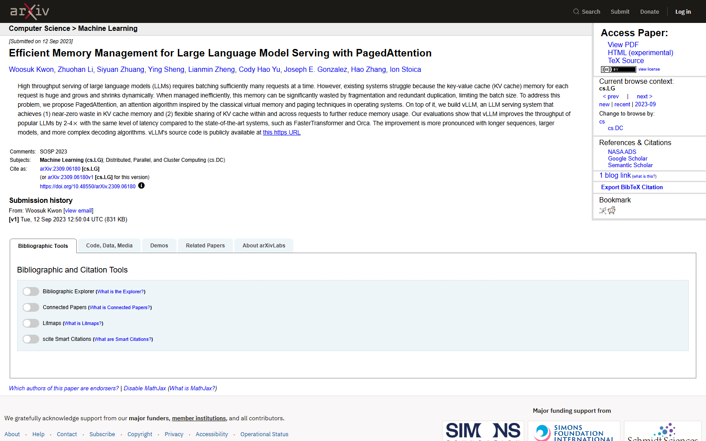
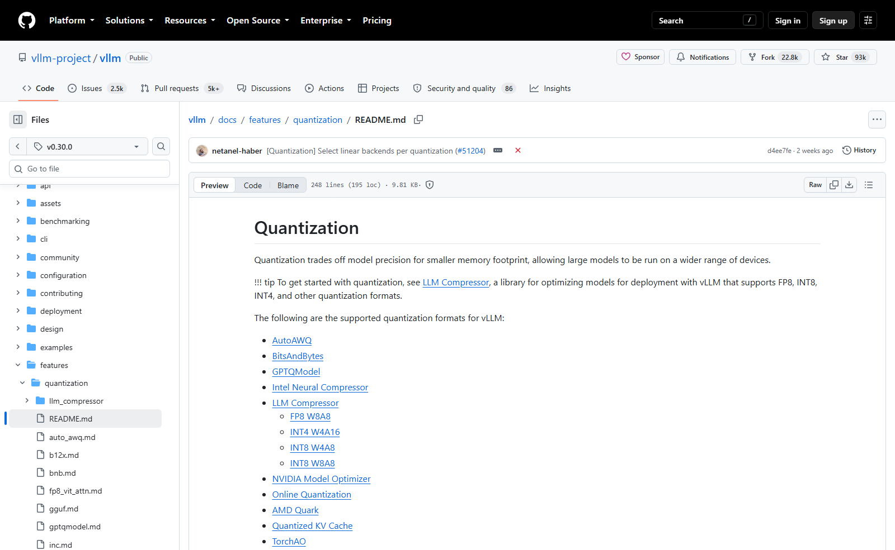
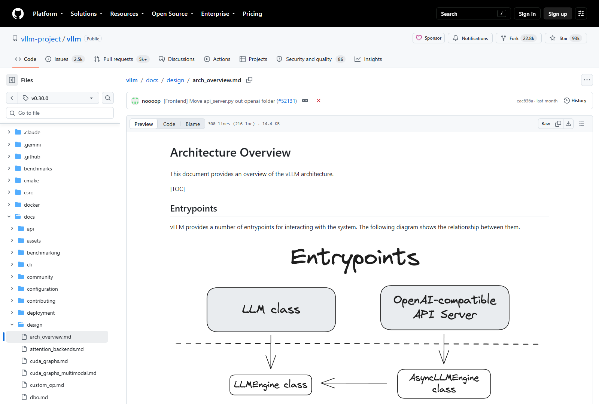

OSS PROJECT INTRO · VLLM 系列第 3 期：核心概念与整体架构
上一期你亲手把 vLLM 跑了起来，这期继续往里看一层——把"显存精算师"的两门绝技拆开验货。PagedAttention 怎么用"块表"把 KV 缓存的浪费从 60%～80% 压到 4% 以内；Continuous Batching 怎么让请求随到随进批、说完即退，不等整批起飞降落；显卡不够大时，张量并行怎么把一张卡切成多张算，量化怎么把权重压薄；最后画出 vLLM 的多进程架构地图——API 服务、EngineCore、GPU Worker 各司其职。学完这期，上一期那三个启动参数你就不只是会抄，而是知道每一刀切在了哪。（基于 v0.30.0，2026-09-30 核对）
把上一期的疑问摊开，vLLM 的概念体系就是三问三答。第一问：显存浪费怎么办？——PagedAttention，把 KV 缓存按小块分页管理，这是它的立身之本。第二问：请求排队怎么办？——Continuous Batching（连续批处理），调度器每一步都重新组批，长请求短请求各走各的，谁也不拖累谁。第三问：一张卡装不下怎么办？——两条路：张量并行把模型切到多卡上一起算，量化把权重和缓存压薄。这三组答案最终都落在同一个架构里：API 服务接请求，EngineCore 里的调度器做决策，GPU Worker 执行计算。下面逐个拆。
先复习病灶：KV 缓存大（官方博客口径，LLaMA-13B 一条序列最多吃到 1.7 GB）且动态（随对话生长，结束前没人知道多长）。老办法按最大长度静态预留，结果是 60%～80% 的显存被碎片和超量预留浪费。PagedAttention 的思路直接抄了操作系统：把物理显存切成固定大小的"块"（block），每条序列的逻辑 KV 缓存记在一张"块表"上，块表映射到不连续的物理块——就像进程页表映射物理内存页。序列长了申请新块，说完了归还块，逻辑上连续、物理上打散。
三个工程细节值得记住。块大小默认 16 个 token（源码 CacheConfig.DEFAULT_BLOCK_SIZE = 16），块越小碎片越少、查表开销越大，16 是论文调出来的折中。最后一块只按需装填——请求只生成到第 37 个 token，就只占三个整块加一小块，不再为"理论上限"买单。前缀共享——多条请求共用同一段开头（系统提示词、few-shot 示例）时，块表指向同一批物理块，一份缓存服务所有请求，这正是 prefix caching 省钱的原理。分页的收益直接改写了显存账：原本"每条请求 × 最大长度"的预留额，变成了"已生长的部分 + 一小块零头"。

来源注记——arxiv.org/abs/2309.06180（2026-09-30 截图）；块大小默认 16 见 v0.30.0 源码 vllm/config/cache.py；1.7 GB/4% 口径见 vllm.ai 官方博客 2023-06-20。
光省显存还不够——GPU 吞吐的另一半瓶颈在批处理方式。传统静态批（static batching）把一批请求捆死：批里最长的请求没说完，所有人都陪跑，GPU 大量算力花在补位（padding）上；新到的请求只能等下一班。连续批处理把决策粒度降到每一步：调度器每生成一个 token 就重新组一次批，先完成的立即退场腾出显存，新请求随到随插进来。这个思想源自 Orca 论文的 iteration-level scheduling，vLLM 把它做成了默认行为。
两门绝技是咬合在一起的：分页让显存按小块借还，调度器才敢每步重组批——如果显存是整段预留的，半路插入一条新请求就得整批重新分配。官方博客的数字是这套组合拳的战绩：对比 HuggingFace Transformers 吞吐最高 24 倍、对比 TGI 最高 3.5 倍，论文口径对当时最优系统也有 2～4 倍。你在上一期启动服务时什么都没配，这两样已经在默认生效——vLLM 把最难的优化做成了默认值。
70B 的模型 BF16 权重就要 140 GB，单卡装不下，怎么办？vLLM 内置的第一条路是张量并行（Tensor Parallelism，TP）：把模型的权重矩阵横向切开，每张卡持有自己的一份切片，前向计算时各算各的，再通过 NCCL 的 AllReduce 通信把中间结果汇总同步。对外它仍是一个完整的模型——TP 是"把一张大卡虚拟成多张小卡"的横向扩建。启动只需一个参数：
# 2 张卡一起扛一个模型（默认单卡，即 --tensor-parallel-size 1）
vllm serve meta-llama/Llama-3.1-8B-Instruct \
--tensor-parallel-size 2三个使用要点。其一，卡数按 2 的幂取（1/2/4/8），因为矩阵切分要整除——单机 8 卡是最常见的档位。其二，TP 吃卡间带宽：每一步前后都要同步中间结果，官方建议卡间有 NVLink 这类高速互联；用 PCIe 普通互联时收益会打折，多机场景官方另有流水线并行（PP）与外置 Ray 的组合，入门期先记住"单机内多卡用 TP"。其三，TP 扩的是"装得下"，顺带也扩了 KV 池——每张卡的闲置显存都并入分页池，并发放大不是线性但接近。
来源注记——docs.vllm.ai Distributed Serving 章节与 v0.30.0 源码 vllm/config/parallel.py（tensor_parallel_size 默认 1，2026-09-30 核对）。
张量并行是"横向扩"，量化是"纵向压"：用更少的比特存权重（和 KV 缓存），显存省一半以上，卡上能装下的模型与并发直接翻倍。官方文档的量化版图按用途分四类，全部开箱即用（加载时自动识别）：
| 路线 | 代表方案 | 一句话定位 |
|---|---|---|
| 权重量化（离线） | AWQ、GPTQ（GPTQModel）、LLM Compressor | 提前把权重压成 4/8 bit，市面开源模型大量自带 AWQ/GPTQ 版 |
| 权重量化（在线） | FP8、BitsAndBytes、TorchAO | 加载时转换，FP8 是 H 卡新一代默认甜点 |
| KV 缓存量化 | Quantized KV Cache（FP8 等） | 缓存也压薄，长上下文场景的 KV 池直接翻倍 |
| 压缩工具链 | LLM Compressor、NVIDIA Model Optimizer | 自己产量化模型的官方工具，校准后无缝加载 |
给新手的选型口径：优先找现成的 AWQ/GPTQ 4bit 版模型（Hugging Face 上主流模型基本都有），省一半显存、精度损失可接受；卡是 H100/L4 这类 FP8 硬件就优先 FP8；长上下文吃紧时再上 KV 缓存量化。量化的代价是精度与算子的适配复杂度，上生产前用自己的业务数据回归测试——这是纪律，不是可选项。

来源注记——github.com/vllm-project/vllm 仓库 docs/features/quantization/README.md（v0.30.0 tag，2026-09-30 截图核对）：方案清单与分类出自该文档。
把三组答案装回一个架构。官方架构文档描述的 V1 多进程设计：API 服务进程接住 HTTP 请求、做鉴权与协议转换；EngineCore 进程是引擎心脏，里面的调度器（Scheduler）每步决定哪些请求上批、分页管理器记账，执行器（Executor）把批次下发；GPU Worker 进程每卡一个，真正执行模型前向与 PagedAttention 算子；数据并行规模大时还有一个协调进程统筹多副本。你在终端 ps 一下就会看到这一串进程——"一条命令"背后是一个分工明确的小型分布式系统。

为什么拆成多进程？官方文档给的三个理由： extensibility（扩展性）——后端算子、调度策略可以各自替换；uniformity（一致性）——离线 LLM 类与在线 serve 共用同一套引擎心脏；可运维性——接口层重启不影响显存里的批次状态。这也是第 5 期源码导读的行进路线：从这两个入口出发，一路走进 EngineCore。
来源注记——github.com/vllm-project/vllm 仓库 docs/design/arch_overview.md（v0.30.0 tag，2026-09-30 截图核对）：多进程角色划分与设计目标出自该文档。
每题点击选项立即反馈 · 共 3 题
1. PagedAttention 中"块表"的作用是？
2. 连续批处理相对静态批，核心改进是？
3. 单机 4 张卡跑一个 70B 模型，最直接的启动方式是？
这是"用可控的间接开销换回巨额浪费"的经典权衡，账要这么算。开销侧：块表查询发生在 CPU 侧的调度与记账环节，每个请求每步查一次表、维护一张表，开销是微秒级的数据结构操作；GPU 侧的 PagedAttention 算子把"逻辑连续"的假设改成"按块表寻址"，注意力内核多一层间接寻址，实测开销占比很小。收益侧：显存利用率从两成提高到九成以上，同卡并发翻数倍——GPU 的算力利用率是乘在"同时服务的请求数"上的，这个杠杆远大于查表的损耗。再看第二层：碎片从 O(序列上限) 降到 O(块内零头)，意味着"显存够但分配不出来"这类最恶心的故障直接消失，准入判断变得可计算（池子里有多少块，就是还能接多少请求），调度器的决策从"猜"变成"算"。最后看同款：你们系统里的内存池化、连接池、数据库页表、对象存储的分块上传，全是这个模式——把"按最大需求预留"改成"按固定小块借还 + 一张映射表"，代价一张表，收益一整个量级。反过来的教训也通用：间接层要控制粒度，块太大退化回预留浪费，块太小查表开销淹没收益，16 token 这个折中数是论文用实验换来的，不是拍脑袋。
先算死账：BF16 下 70B 权重约 140 GB，80 GB 卡无论怎么调度都装不下，所以至少要用到一条"压缩或拆分"路线。路线一，量化（优先推荐）。换用 AWQ/GPTQ 4bit 版本，权重压到约 35 GB，80 GB 卡装下后还剩 40 GB 以上给 KV 池，并发出色；FP8 版本约 70 GB，勉强装下但 KV 池局促。代价是精度回归成本，主流 70B 模型的 4bit 版社区已大量验证，风险可控。路线二，张量并行 TP=2。两张 80 GB 卡各持 70 GB 权重切片，合计 160 GB 装下 BF16 全量，KV 池两卡合并；需要卡间 NVLink 高速互联，否则同步开销侵蚀收益。适合精度红线严格、卡预算充足的场景。路线三，量化 + TP 组合。4bit 权重 35 GB + TP=2，KV 池极其充裕，是高并发长上下文的重炮配置，成本两张卡。路线四，换更小模型。32B 级模型单卡装下，若业务效果达标，这是总成本最低的路线——别忘了这永远是候选之一。优先级排序的逻辑：先问效果预算，再问卡预算——效果达标优先路线四（最便宜）；效果必须 70B 且允许量化，路线一（一张卡的事）；精度红线不许量化，路线二；既要 70B 又要高并发长上下文，路线三。把这四条路线讲给业务方听的时候，账本是同三笔：权重、KV 池、卡间带宽——第 4 期压测会把这笔账算到底。
带走这五句话：
--tensor-parallel-size N 把权重切到 N 卡协同，吃卡间带宽，卡数取 2 的幂；下期预告：第 4 期《实战：压测与容量》——用官方压测工具给一块卡做体检：吞吐与延迟两根曲线怎么读，权重、KV 缓存、激活三笔显存账怎么算，max-model-len 与选卡怎么取舍。
Primary source：官方架构总览 · PagedAttention 论文（arXiv 2309.06180） · 量化文档——本期原理与数字均出自官方文档与论文（v0.30.0，2026-09-30 核对）。